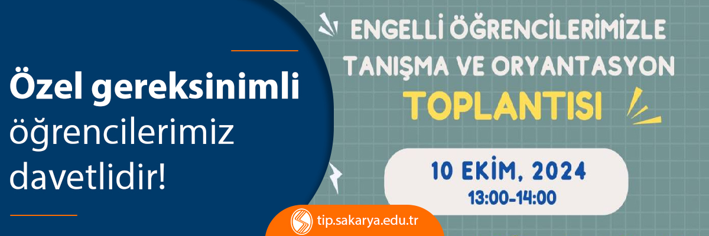

Engelli Öğrencilerimizle Tanışma ve Oryantasyon Toplantısı
Tarih: 4 Ekim 2024
Üniversitemizde eğitim gören engelli/ özel gereksinimli öğrencilerimizin birbirleriyle tanışması için 10 Ekim 2024 Perşembe günü saat 13.00'te üniversitemiz Personel Lokalinde tanışma ve oryantasyon toplantısı yapılacaktır. Tüm engelli/ özel gereksinimli öğrencilerimizi bekliyoruz.
 Burs Başvuruları Başladı!
Burs Başvuruları Başladı!
 9.Deney Hayvanı Kullanım Sertifikası Kursu
9.Deney Hayvanı Kullanım Sertifikası Kursu